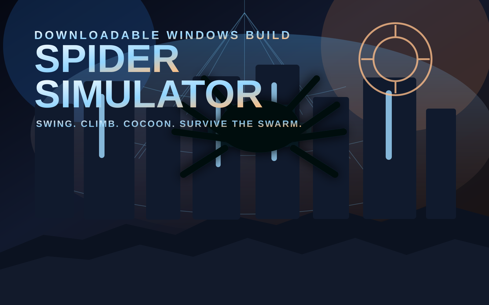
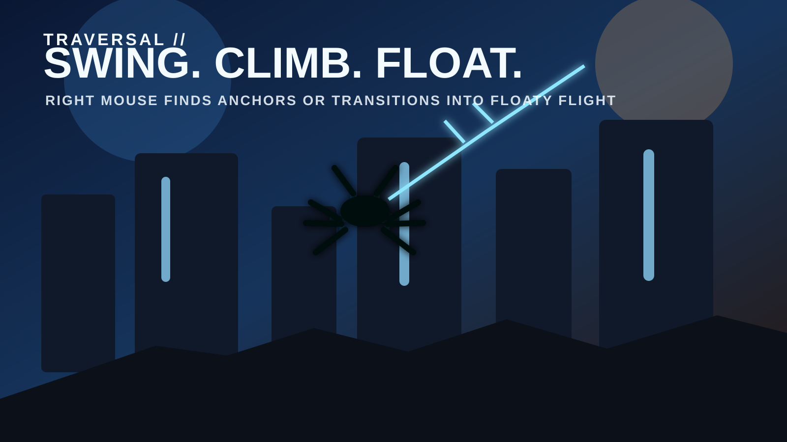
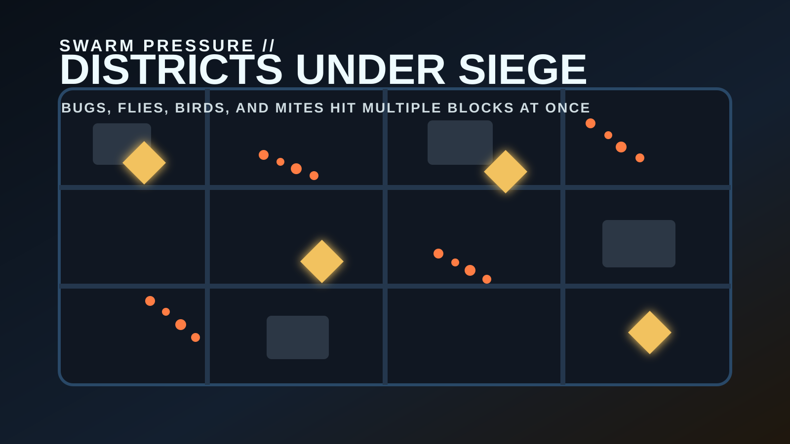
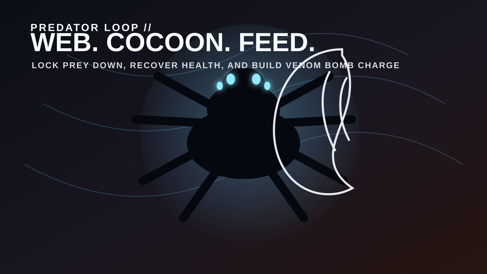

Fresh downloadable build
Spider Simulator
Swing, climb, float, cocoon prey, and survive swarm-heavy city blocks as a giant spider. This downloadable Unreal build is the current live single-player Windows package from the latest CityRaidTPS project, cleaned up and re-presented as the spider game it really is.

What it is now
A spider power fantasy dropped into an overrun city
Traversal first
Web-swing from buildings, cling to walls, and hold a missed web shot long enough to drift into floaty spider flight.
Predator loop
Wrap enemies in web, cocoon them, feed to recover health, and build venom-bomb charge while staying in motion.
Swarm pressure
Bugs, flies, birds, and mites roll through the neighborhoods in heavier mixed waves so the city feels alive and hostile.
Pause and reset
The latest build includes the in-game Escape menu with Resume, Restart District, and Quit Game so the standalone version is easier to live with.
Controls
Everything you need to know before you drop in
Move and survive
W / A / S / D move, Space jumps, and Shift sprints for faster ground movement.
Traverse like a spider
Right Mouse fires the traversal web. Hit a surface to swing. Hold it into open space long enough and you transition into floaty spider flight.
Climb and hunt
E clings to climbable walls. Left Mouse spins webbing, cocoons prey, and feeds on drainable enemies once they are trapped.
Ultimate and pause
Q triggers the venom bomb once you build enough charge by webbing or feeding. Esc opens the pause menu with resume and restart options.
The download now includes a README_START_HERE.txt file inside the zip with the same control guide and launch notes.
Why this page matters
A clearer landing page for anyone searching for a downloadable spider game
Downloadable Unreal spider game
Spider Simulator is one of the site’s two headline downloadable Unreal Engine games, built as a Windows zip instead of a browser-only prototype. That makes this page the right destination for people searching for a standalone Unreal spider game rather than another instant-play web page.
Traversal over menu clutter
The core identity is movement: web swinging, wall climbing, aerial drifting, and a predator loop that keeps the city traversal tied directly to combat and survival. The page now explains that clearly so visitors and search engines can see what the build actually is.
Single-player focus
This download is intentionally framed as a single-player spider action sandbox. There is no multiplayer setup, no launcher assistant, and no extra install flow beyond extracting the zip and opening the game folder.
Part of a bigger lineup
If someone likes this page, the next best internal links are the other download page for Dragonfall: Jungle Siege and the broader Nova Arcade games guide.
Fresh visual set
Cleaner Spider Simulator branding for the live page



Download notes
How to play locally
Normal zip download
Spider Simulator downloads as one normal Windows zip from the live backend, so you can grab the whole package in one click.
What to expect
This build is focused on the standalone single-player game with no room-code or multiplayer launcher extras bundled in, plus branded install and uninstall helpers for Windows.
Current highlight
The latest refresh is all about the spider fantasy: movement, cocooning, feeding, swarms, and the updated pause/options flow.
- Download
Spider-Simulator-Win64-v2.zip. - Extract the archive fully before launching the game.
- Open the packaged folder after extraction.
- Run
INSTALL-SPIDER-SIMULATOR.batif you want shortcuts plus a proper uninstall entry in Windows. - You can also run
PLAY-SPIDER-SIMULATOR.batorFIRSTPERSON.exedirectly for a portable launch. - If you installed it, use
UNINSTALL-SPIDER-SIMULATOR.bator Windows Settings > Apps to remove it cleanly later.
Zip size: about 402 MB. Extracted size is about 436 MB.
Packaged from the latest CityRaidTPS Unreal project on April 14, 2026.
The zip now includes README_START_HERE.txt, INSTALL-SPIDER-SIMULATOR.bat, and UNINSTALL-SPIDER-SIMULATOR.bat.
Windows may still show an initial SmartScreen warning until the build is code-signed. The installer and branding are cleaned up, but the real trust fix is Authenticode signing.
SHA-256: 7C612709A659FA610D9B35A4E477DDC8EFAD22C867ED14BBB6942AD576FA3EA7